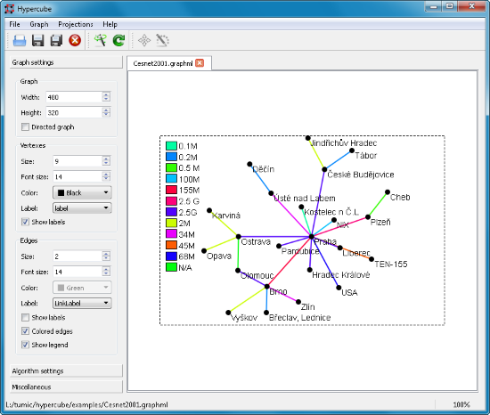

Hypercube
Description
Hypercube features a Qt based GUI tool for visualizing simple text based graph (graph theory) representations as SVG and EPS images as well as a Qt independent command line tool. Hypercube uses a simulated annealing algorithm to lay out the graph that can be easy parametrized to achieve the desired look.
Main goals in development are portability and easy usage rather than high performance and complexity. The command line tool does not require any other libraries than the standard C++ library and the GUI tool uses "pure" Qt.
Key features
- Native GUI for Windows, Mac OS X and Linux.
- Industry standard input formats (DOT, GML, GraphML, GXL) as well as simple line based text files.
- High quality vector output to SVG and Postscript.
- Unicode (UCS2) capable core. Support for UTF-8 encoded input files as well as various Latin, Cyrilic and Greek 8-bit encodings.
- Easy graph look setting in WYSIWYG mode. Manual layout fine-tuning possible.
- Natural lookink graph layouts.
- Extensible with modules providing support for additional input/output formats.
GUI tool
{kind=link}
CLI tool
Usage: hypercube-cli [OPTIONS] FILE
OPTIONS:
-v print the program version
-s <dimensions> set image size to <dimensions>
-f <format> set output format to <format>
-e <encoding> set input file encoding to <encoding>
-o <file> set the output file to <file>
-vc <color> set vertex color to <color>
-ec <color> set edge color to <color>
-vs <size> set vertex size to <size>
-es <size> set edge size to <size>
-vf <size> set vertex font size to <size>
-ef <size> set edge font size to <size>
-d directed graph
-u undirected graph
-c asign a unique color to every uniqe edge value
-l <size> show edge color legend with font size <size>
option arguments:
<dimesnsions> width,height
<color> #RRGGBB
<format> svg eps
<encoding> iso-8859-1 iso-8859-2 iso-8859-5 iso-8859-7
windows-1250 windows-1251 windows-1252 windows-1253
koi8-r koi8-u utf-8
See the exported manual page for details.
Screenshots
Input formats
Examples
Download
Current version: 1.7.1
Developement
Hypercube has a project page at Github. For feature requests/bug reports please use the issue tracker.